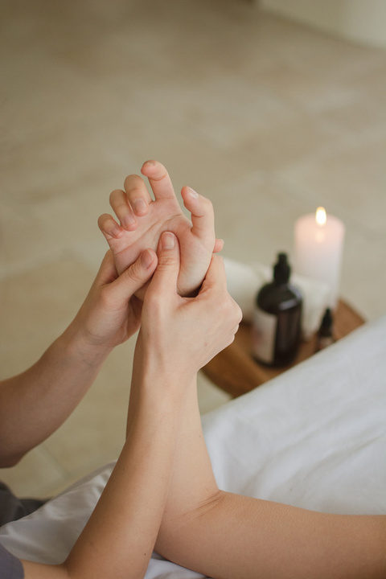
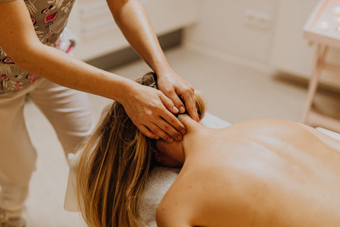
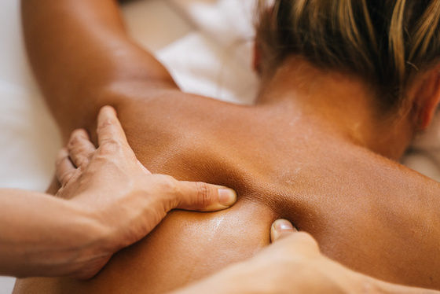
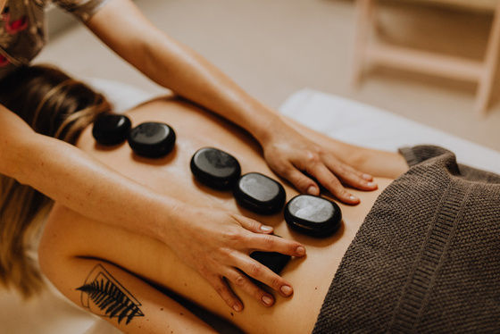
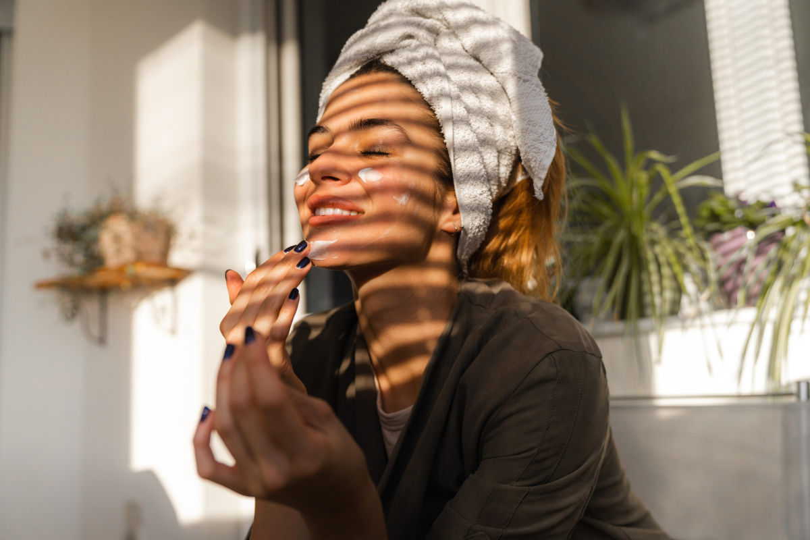
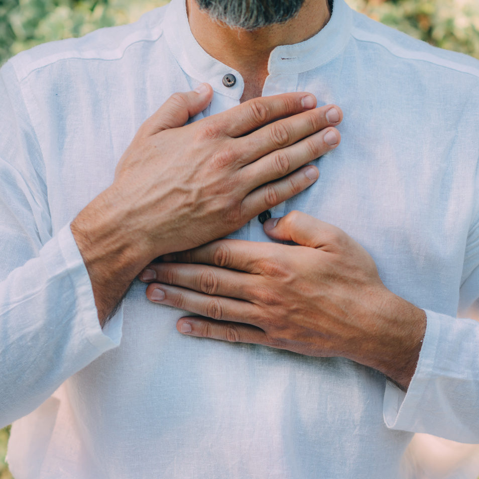

Smooth, relaxing, long strokes serve to gently ease tension, calm the nervous system, enhance breathing and blood circulation, leaving the body fresh, relaxed, and rejuvenated. Generally done with minimal clothing beneath full body draping with only the areas being worked temporarily exposed.
Welcome to
Silver Leaf
Wellness Massage
Relaxation is not a luxury, it is where healing begins
Book NowSilver Leaf offers boutique, customized massage services focused on:
- overall relaxation, well-being, and full body awareness
- addressing short and long-term tension and stress responses in the body,
- integrating mind-body wellness for disease prevention
- assisting the body in recovery from injury and illness
I am delighted that you are here and I am eager to help you on your wellness journey!

Alice Leigh Mason
Licensed Massage Therapist
(LMT) License # 14338
Master of Education (M.Ed.)
I welcome the opportunity to get to know YOU.
I’m a graduate of the Urban River Massage Institute in Greenville, SC and a licensed massage therapist in Easley, SC. I’m passionate about helping my clients learn to achieve wellness and eliminate pain through body awareness. We’ll address pain and discomfort through deep therapeutic massage techniques while embracing the profound potential to achieve maximum wellness through the focus of mind and body.
I work with clients to:
- develop body awareness: the ability to listen and hear what the body needs
- provide neurological grounding and relaxation
- identify myofascial stress responses (usually experienced as pain) and work to release those responses with a range of bodywork techniques, and
- provide guidance for ongoing self-care and avoidance of Chronic Pain.
My signature massage, customized for each client, is a blend of Swedish, deep tissue, myofascial release, and lymphatic drainage.
Upon advance request, I’m happy to include hot stones and cupping.
More About MeF.L.Y
First Love Yourself
Bring me your internal chaos, your shut down heart, your aching body, your restless worries.
I will create a space where body and mind can unwind, where you can reconnect with the wisdom and rhythm of your body and soul, where your natural health and creativity are nurtured, and where balance can emerge.
You are the director of every session – designed to meet your comfort needs.
Services
Targets specific body tissues that may be tender and restricted due to stress, tension, or injury. Stimulates blood circulation to support the body’s natural healing process. Work may cause temporary tenderness but should not last more than 24 hours. Work may be done as part of a full body massage but may also be done only on the targeted region.
Focused on release of fascial restrictions to boost circulation, healing, and overall ease of body movement. Fascia is the connective tissue which binds together every structure and region of the body. The technique may involve very slow dragging, tugging, pressure, and pulling on the fascial tissues usually done without lotion or oils.
Very light strokes on the skin in specific directions applied to help move lymph, watery intercellular fluid, out of the body’s tissues in order to provide relief from swollen tissues and puffiness.
Stretching aided by the therapist to help relieve muscle and fascial tightness, striving to increase range of motion and enabling the body to move more freely. For specific stretch sessions, clients should dress in lightweight, comfortable clothing.
Involves techniques that ease pain and tension and provide deep relaxation throughout the head, neck, and face. May be done lightly clothed with only head, neck, and face exposed.
Techniques that ease pain and tension and provide deep relaxation for the feet and lower legs, and hands and lower arm. Includes stimulation of reflexology points though is not intended to address specific medical conditions. May be done lightly clothed with only hands and feet exposed.
Packages & Pricing

30 minutes
$50
Package of 5: $200

60 minutes
$95
Package of 5: $450

90 minutes
$135
Package of 5: $700
Cupping and Hot Stones may be included upon request at no extra charge.
Veterans discount: $5/massage
Referral policy: Silver Leaf Wellness Massage runs by word of mouth! If you’re happy with my service, please consider referring your friends and family. For each person you refer who becomes an active client, you will receive a $10 discount on your next massage (or a $10 reimbursement if you have purchased a package.)
Not sure what massage is right for you? Let’s chat.
Alice Leigh Mason, MEd, LMT
Phone: 864-668-4226
Easley, SC 29640
Book With Me
Contact Information
Alice Leigh Mason, MEd, LMT
Phone: 864-668-4226
Easley, SC 29640


The high price of NOT relaxing is Chronic Stress!
Chronic Pain is a common result of Chronic Stress from:
Physical stressors due to Injury Ergonomics Body Compensation Patterns
Psychological stressors such as Interpersonal Conflicts Anxiety Depression
Chronic stress may be so pervasive that we “bury it” and lose our full awareness of it. But the impacts of chronic stress, often called the “silent killer”, on our physical health are among the top factors responsible for chronic and degenerative health conditions including:
Heart Disease Cancer Autoimmune Disease
Diabetes Dementia Anxiety Depression
The mind and emotions are entirely intertwined with the physical experience of the body. When the mind is stressed, it plays out in the physical body. When the mind is relaxed, that, too, plays out in the body. When either the body or mind is stressed without relief, they begin to create problems.
Developing greater body/mind awareness and relaxation is now understood as an essential practice of disease prevention and wellness.
More About Me
It was my experience as a young professional in Patient Education at the University of Virginia Medical Center, some 40+ years ago, which led me to first learn how the intersection of mind and body would transform our understanding of health and well-being.
I began to explore massage and bodywork taking classes and practicing on friends and family. But life took me down a more “practical” path of educational technology which ultimately gave me personal experience with the ill effects of the recipe of technology, desk work, and stress. I finally came back around to truly grasp and embrace the enormous and multifaceted role that the mind/body connection plays in the everyday life and well-being of each of us.
Now, as a massage therapist I work with the body as an avenue into the deeper recesses where pain, stress, and fear lurk as unwelcomed messengers of an individual’s struggle to find peace, coherence, and safety in a world that is increasingly chaotic and stressful.
Fundamental to my massage practice is my personal practice rooted in a boundless love and respect for life and a deep sense of gratitude for the privilege of growing and sharing my gifts with others. This, combined with my ever-present curiosity to learn about the many ways we can support and engage our human potential for the good enables me to be a faithful and present guide on your own journey.